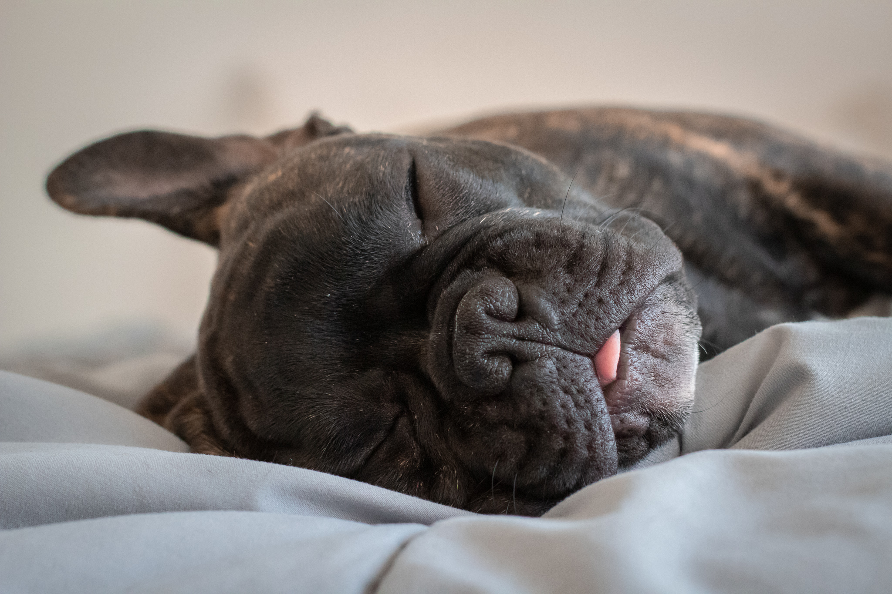

Galería de Fotos
Arquitectura
La fotografía de arquitectura se encarga de capturar los elementos y espacios creados por el hombre. Incluye tanto el exterior de los edificios como el interior o los detalles que convierten esa obra en única.
Naturaleza
La naturaleza que nos rodea está repleta de fascinantes lugares y de momentos alucinantemente bellos que piden a gritos ser inmortalizados, convertidos en fotografías que un día atestiguarán lo que este planeta una vez fue.

Animales
Los animales de compañía ofrecen multitud de posibilidades para crear fotos únicas, tiernas, divertidas.


Esculturas
Ya sea al doblar una esquina en una callejuela de París, o viendo el British Museum de Londres, la escultura puede aparecer sorpresivamente ante nuestros ojos.